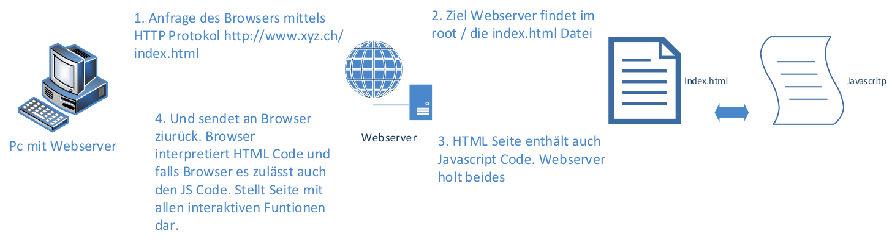

Modul 307 |Interaktiven Webauftritt erstellen
Repetitionsaufgabe Tag 2 (Zeitbudget 30min)
Erklären Sie das Request/Response Modell und visualisieren Sie es
Formulare analysieren und verbessern
Schauen Sie sich untenstehende Formulare an und analysieren Sie sie
Was für Schlüsse ziehen Sie und was würden Sie verbessern? (Lösung hier notieren)
Keine blinkenden bullet points
Kontrast muss lesbar sein (Barrierefreiheit)
Formular strukturieren (Lesbarkeit
Keine Tabellen verwenden!
- Zeitaufwand grösser
- Längere Ladezeit (rendern)
- Barrierefreiheit! (Nachteil für Screenreader - Braillezeile)
- Nicht zukunftssicher - Devices
- Logik! (Semantik HTML)
Nehmen Sie die Verbesserungen vor und verlinken Sie sie wieder in dieses Dokument